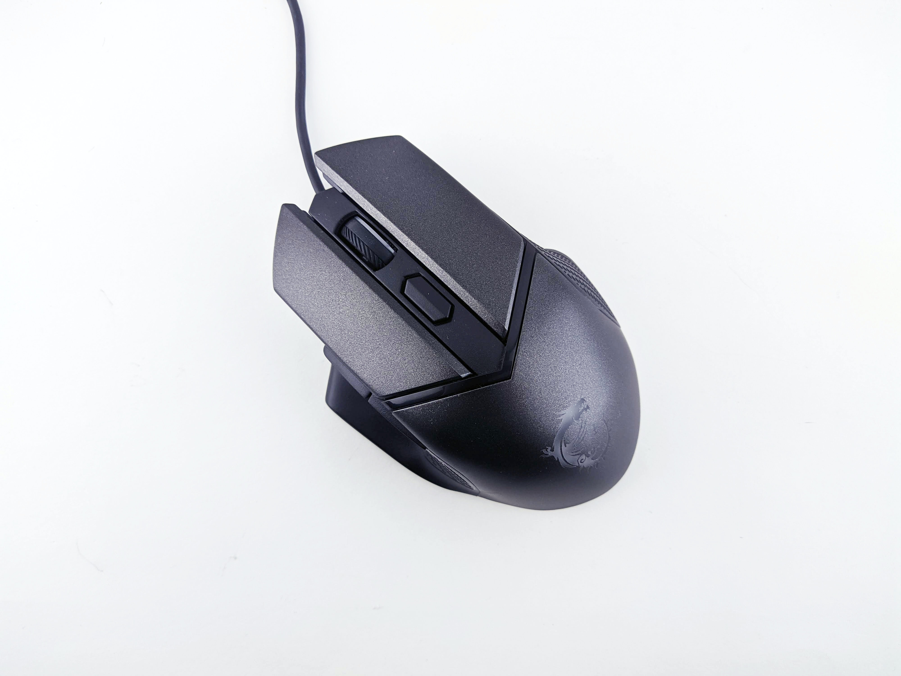
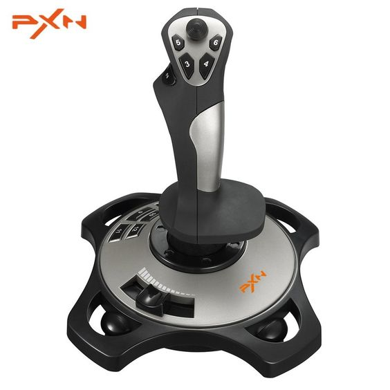

Mouse
The trackball, a related pointing device, was invented in 1946 by Ralph Benjamin as part of a post-World War II-era fire-control radar plotting system called the Comprehensive Display System (CDS). Benjamin was then working for the British Royal Navy Scientific Service.A computer mouse (plural mice, sometimes mouses) is a hand-held pointing device that detects two-dimensional motion relative to a surface. This motion is typically translated into the motion of a pointer on a display, which allows a smooth control of the graphical user interface of a computer.The device was patented in 1947,[9] but only a prototype using a metal ball rolling on two rubber-coated wheels was ever built, and the device was kept as a military secret.Engelbart was also recognized as such in various obituary titles after his death in July 2013.
Keyboard
A computer keyboard is a peripheral input device modeled after the typewriter keyboard which uses an arrangement of buttons or keys to act as mechanical levers or electronic switches. Replacing early punched cards and paper tape technology, interaction via teleprinter-style keyboards have been the main input method for computers since the 1970s, supplemented by the computer mouse since the 1980s.As early as the 1870s, teleprinter-like devices were used to simultaneously type and transmit stock market text data from the keyboard across telegraph lines to stock ticker machines to be immediately copied and displayed onto ticker tape.Earlier, Herman Hollerith developed the first keypunch devices, which soon evolved to include keys for text and number entry akin to normal typewriters by the 1930s.


Joystick
A joystick, sometimes called a flight stick, is an input device consisting of a stick that pivots on a base and reports its angle or direction to the device it is controlling. A joystick, also known as the control column, is the principal control device in the cockpit of many civilian and military aircraft, either as a centre stick or side-stick. It often has supplementary switches to control various aspects of the aircraft's flight.The electrical two-axis joystick was invented by C. B. Mirick at the United States Naval Research Laboratory (NRL) and patented in 1926 (U.S. Patent no. 1,597,416)".[4] NRL was actively developing remote controlled aircraft at the time and the joystick was possibly used to support this effort. In the awarded patent, Mirick writes: "My control system is particularly applicable in maneuvering aircraft without a pilot.